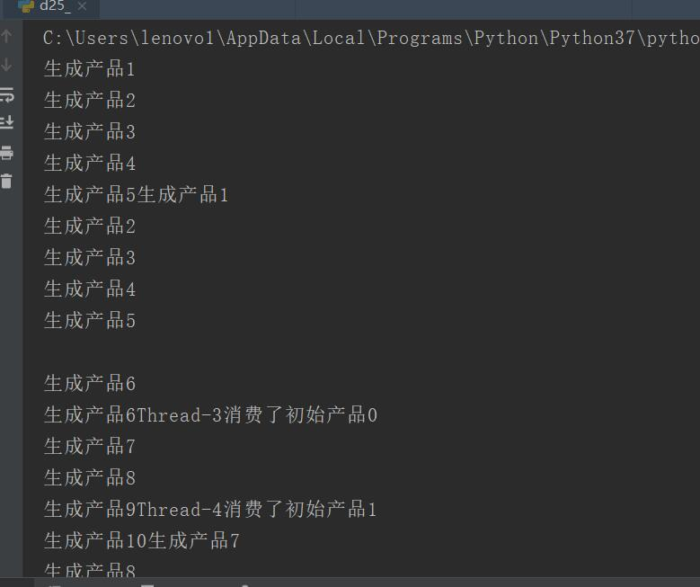

原文出处:本文由博客园博主心悦君兮君不知-睿提供。
原文连接:https://www.cnblogs.com/ruigege0000/p/11462390.html
原文连接:https://www.cnblogs.com/ruigege0000/p/11462390.html
一、生产者消费者模型
1.一个模型。可以用来搭建消息队列；queue是一个用来存放变量的数据结构，特点是：先进先出
import threading
import time
import queue
class Producer(threading.Thread):
def run(self):
global queue
count = 0
while True:
#qsize返回queue的内容长度
if queue.qsize() < 1000:
for i in range(100):
count = count + 1
msg = "生成产品"+str(count)
queue.put(msg)
print(msg)
time.sleep(0.5)
class Consumer(threading.Thread):
def run(self):
global queue
while True:
if queue.qsize() > 100:
for i in range(3):
#get是从queue中取出一个值
msg = self.name + "消费了" + queue.get()
print(msg)
time.sleep(1)
if __name__ == "__main__":
queue = queue.Queue()
for i in range(500):
queue.put("初始产品"+str(i))
for i in range(2):
p = Producer()
p.start()
for i in range(5):
c = Consumer()
c.start()

二、源码
d25_2_queue_reconsitution.py
https://github.com/ruigege66/Python_learning/blob/master/d25_2_queue_reconsitution.py
2.CSDN：https://blog.csdn.net/weixin_44630050（心悦君兮君不知-睿）
3.博客园：https://www.cnblogs.com/ruigege0000/
4.欢迎关注微信公众号：傅里叶变换，后台回复”礼包“，获取大数据学习资料